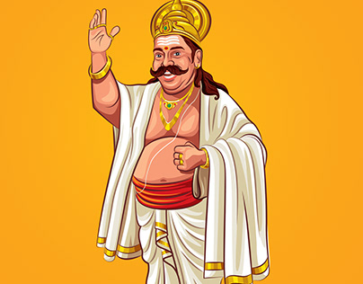

Celebrating Maveli: The King of Onam
Welcome to this portfolio dedicated to Maveli, the beloved king of Kerala, and his connection to the vibrant festival of Onam. Through a collection of artworks, stories, and cultural insights, we delve into the rich history and traditions that make Onam a cherished occasion in the hearts of Keralites.
